Visualizing Molecules with gOpenMol 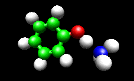
gOpenMol is a molecular visualization program written by Leif Laaksonen and available from him at
www.csc.fi/gopenmol/ . Versions are available for Windows, Linux, and some Unix platforms.
This tutorial is based on gOpenMol version 2.3 running under Windows, however, the Linux version is nearly identical. The tutorial is not intended to be a manual, but rather a simple walk-through showing how to accomplish some of the more common types of
visualization. Another way to learn about gOpenMol's capabilities is to go through the Demos (Help > Demos). The tutorial has been updated to cover new features introduced for version 2.2 of gOpenMol. The new features include more logical and streamlined menu structure, new labeling features, some features for creating VRML content, and new features for displaying biomolecules. There are also several nice "ease of use" improvements. Also much improved is the gOpenMol web site, which now contains a great deal of technical information (see the "techies" section). The tutorial covers: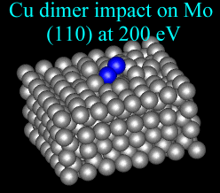
1. Installing and running gOpenMol on Windows and some Linux hints
2. Importing and viewing calculated molecular structures in various ways
3. Visualizing molecular orbitals, electron densities, spin densities, etc. in several different ways
4. Viewing and Analyzing Vibrations or Other Trajectories:
A. Animations
B. Vibrations as static vectors
C. Analyzing Trajectories
5. Making movies
6. Selecting and manipulating groups of atoms, measuring molecules, merging structures and exporting structures
7. Global v.s. Local transformations
8. Automating with scripts
9. Features for Biomolecule Visualization
10. Creating VRML files (3D images and trajectories that can be manipulated over the web)
11. Customization and other stuff I thought was useful/cool
gOpenMol has many features not mentioned in this tutorial. It includes many utility programs, tools for analysis of trajectories, structures, etc., and lots of stuff aimed at biomolecules. See Help>Demos for examples, and have a look at the manual (included as a PDF file in the gOpenMol distribution). The tutorial primarily covers visualizations my group uses commonly. For the same reason (i.e., because it is what we do) the tutorial is illustrated with the output from Gaussian 98/03 calculations. gOpenMol is capable of importing structures and other data in many (> 21) other
formats (GAMESS, XMOL, CHARMM, mopac, ....), and you should be able to generalize from the steps used to process the Gaussian results. If you would like to add some new trick(s) to the tutorial, please contact me (Scott Anderson) and I will be happy to add your contribution.
Notes:
In the tutorial, navigation of the menus is denoted like this: File>Import>Coord, i.e. select
File, then select Import, then select Coord.
Dialog boxes (MS Windows lingo) are the same as Widgets (gOpenMol lingo).
Obligatory Disclaimer: gOpenMol and this tutorial are provided "as-is" as a service to the chemistry community. Neither Leif Laaksonen, nor Kevin Boyd, nor Scott Anderson nor any institutions associated with them accept any responsibility for errors in gOpenMol or the tutorial or for
maintaining or supporting either.
Gaussian, G98, G03 etc. are registered trademarks of Gaussian, Inc., Windows is a trademark of Microsoft, and Animation Shop is a trademark of Jasc Software.
1. Installing and running gOpenMol on Windows and some Linux pointers.
- After downloading the gOpenMol distribution zip file, unzip into a directory, making sure to preserve the subdirectory structure. Then, run the install.bat file. To run the program, you simply execute the "rungOpenMol.bat" file that will be found in the bin directory. You will notice that gOpenMol creates three windows. One shows the visualization output, and we will refer to this as the "View" or "Display" window. One is a typical dialog box with menus and radio buttons (the "Interface" widow), and the other is a text window that lets you see what commands gOpenMol is processing. We aren't going to use this one, but you may find it useful to take a peak at it as you go along -- it contains information that can be helpful if something isn't working the way you think it should. Windows users: If all you see upon startup is a full screen text window, hit Alt-Enter to force the text to display in a window.
- gOpenMol itself can deal with long file and directory names, but the batch files used to start up gOpenMol can't deal with long names. Also, some of the utility programs that come with gOpenMol are not happy with long/weird filenames (e.g., directory names with spaces or dots). Life will be easier if you unzip and install gOpenMol into a directory that has no long/complex names in its path. Also if you have problems converting files (e.g. preparing vibration animations) try renaming the file to something short and simple. Finally, note that the source code is provided for most of the file conversion programs, so if you have some wierd file format that you want to work with, it is easy enough to modify the utilities to work with your files. As an example, the tutorial zip file has a stand-alone version of the XVIBS program (normally run from the gOpenMol "Run" menu) that extracts vibrational normal coordinates from output files, and writes XMOL trajectory files that gOpenMol can use to animate vibrations. Try this stand-alone program if you have problems with the built-in version of xvibs.
- gOpenMol needs a fair amount of environment space. On most systems you will be able to run it without fussing around. If you get "out of environment space" errors (probably on an older Windows machine), what you must do is find the file "rungOpenMol.bat" and right click it with your mouse, then select properties. Select the "Memory" tab, then try setting "initial environment" to Auto. If that doesn't work, then set initial
environment to 1024.
- If you run gOpenMol, import a structure, but find that nothing is visible in your Display window, you may need to change your video settings. For example, on my laptop, the display needs to be set to True Color.
- For Win95/98, you may get an aborted startup and error message about not being able to read some parameter file. The problem is trivial to fix. Edit the environment.txt file found in the main installation directory, and you will see various paths to files that gOpenMol needs. All the directories should be separated by a double back-slash, so change any single \ characters to \\ .
- PC Linux installation pointers: I have installed gOpenMol on several different Linux distributions, and it is pretty easy. Download the gOpenMol compressed tar file (somethingorother.tar.gz). Login as root, un-tar the files to some base directory (e.g. /usr ), and make sure that you preserve directory structure. I use the archiver program that comes with the KDE desktop, but any will do. You will then have a whole tree of directories under, for my example, /usr/gopenmol/.... Go to the /usr/gopenmol directory and type "./install.csh" to run the install script to complete the installation. The only problem is that the file permissions need to be reset to allow non-root users access. "chmod +orwx -R gopenmol" executed in your base directory (e.g. /usr) will make the whole gopenmol directory tree accessible to all users. This gives broader access than is really needed, but for a Linux box with controlled access it should be OK. You run gOpenMol by executing the rungOpenMol script in /usr/gopenmol/bin. I use KDE, and just make a link to rungOpenMol on my desktop.
2. Importing and viewing calculated molecular structures in various ways.
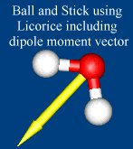The first step in any visualization is simply looking at the molecular framework. For the purposes of this tutorial, several sample files from a MP2 geometry optimization and frequency calculation are provided. gOpenMol does not directly read Gaussian output files, but it can read PDB files, Gaussian formatted checkpoint files, Xmol files, and many other formats. There are many import combinations possible using utilities provided with either Gaussian or gOpenMol. Which import method is easiest depends on what molecular features you are planning to view. NOTE: gOpenMol can import multiple structures to allow you to build up complexes, etc. This done by simply checking the "Append structures" box in the Import Coordinates dialog box. We will see below how to manipulate the composite structure.
If all you want to do is look at the molecular framework, then the simplest is probably to use the Gaussian newzmat utility to produce a Brookhaven PDB file from your calculation output (the checkpoint file). A sample file (H2O.PDB) is provided. To import, simply select File>Import>Coords in the gOpenMol interface window. Note the check box labeled Select file type by extension (new in gOpenMol v2.2). If this is checked, then gOpenMol will try to figure out what kind of file you are importing from the file extension. If you uncheck this option, then you will see the full list of file types gOpenMol knows about. For this exercise browse to find the h2o.pdb file. Click Apply, then Dismiss. You should now see a red and white line in your view window. Left click on the window and drag the mouse to rotate the molecule around. Now right click and drag to resize the molecule. You can also hold down the shift key and click and drag to translate the molecule (shift left click toggles between rotate and translate). If nothing is moving, make sure that the "Selection:" and "Pick Atoms" options are OFF in the interface window.
Now select View>AtomType in the interface window. Select Licorice and click apply, but don't click dismiss. You should see a licorice stick structure of water. To get ball and stick, simply change the cylinder radius in the Atom Type dialog box to 0.05 (making sure that Licorice is selected) and again click apply. You can also make CPK and scaled CPK. For example, you can make a different sort of ball and stick model by selecting CPK and setting the scale to 0.2
Note that there are many possible cosmetic tweaks including positioning light sources, changing background
color, etc., that you can explore in the Edit and View menus. The dipole moment vector plotted in the figure is
generated using the plot arrow command line option, explained below.
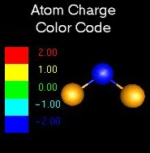 gOpenMol can also import atomic charges (File > Import > Atom Charges) in various formats, and you can color the atoms according to charge (View > Atom colour, select "color by charge" and set Min and Max). In the case of Gaussian, you import directly from the output file (*.log or *.out). The example at right shows charges from an MP2 Natural Population Analysis. The color scale is set by selecting Plot > Colour Scale..
TIPS:
- The quickest way to rotate, translate, and resize your molecule is by dragging the mouse. Precise control over rotation and translation can be gotten by selecting Edit > Rotate/Translate.
- If you have contours or other rendered surfaces displaying, you may find that rotating the structure with the mouse is slow, particularly if you have an old computer. You can speed up the rotation by setting the display to temporarily switch to stick figures during rotation. Simply select Edit>Display Properties, and select "Display stick (fast)" for the Redisplay type.
- The stick, licorice, and CPK modes overlay each other, but if you have CPK turned on, you can't see the stick or licorice views, because they are hidden by the CPK view. To turn off a display mode, in the Atom Type dialog, select whatever view mode you want to turn off, toggle Display to Off, then select Apply. If you don't see anything when you turn off the CPK or licorice views, you must have also turned off "stick" mode. In that case select stick, toggle display to On, and hit apply. If all else fails, try File>Reset>gOpenMol and start over.
- Try both perspective and orthographic display modes - Edit>Display Properties.
- Once you have things the way you like them, you should save in the native gOpenMol format so you don't have to go through all formatting again.
- If you import a structure and just see an array of crosses, rather than a stick structure, you need to make sure that the "Calculate connectivity" option is checked in the File>import coordinates dialog box.
- If you need to import coordinates from Chem 3D binary files, there is a plug-in (see below) written by Kevin Boyd that allows this. Select Tools>DLL/SO plugins > Enable Chem 3D coordinate filter. Once that is done, you will see the Chem 3D file type in the File>Import>Coord control (uncheck the Select file type by extension box).
- If your structure is in a file format that gOpenMol can't read, as a last resort it is pretty trivial to edit an ASCII file containing the geometry into XYZ format, which gOpenMol can read and write. Instructions for creating XYZ files are given at the end of the tutorial.
3. Visualizing molecular orbitals, electron densities, spin densities, etc. in several different ways
A. Generate data. For this step, you need a file containing the data for whatever property you are trying to visualize. gOpenMol wants this data in the form of a plot file (*.plt), and information about the format can be found on the gOpenMol web site (Techies corner). Fortunately gOpenMol also comes with conversion utilities that generate plt files from the appropriate files produced by common ab initio or MM programs. Look under the Run menu for utilities like gCube2plt (Gaussian), Jaguar2plt, Gamess2plt, etc.
Brief instructions for Gaussian: Generate a cube file, either by using the cube keyword in your Gaussian calculation, or by using the Gaussian utility program cubegen to convert a formatted checkpoint file. Formatted checkpoint files can be generated from the regular checkpoint file using Gaussian utility formchk.
B. Load Structure and Generate Contour Data. In gOpenMol, do the following steps:
i. If you are not in a fresh gOpenMol session, then select File>Reset>gOpenMol.
ii. Select File > Import > Coords. For this example load the file H2O.fch, a Gaussian formatted checkpoint file. Click Apply and Dismiss.
Note: you can't use the H2O.PDB file used in the previous example, because when the Gaussian newzmat utility generates a PDB file, the coordinate system is rotated, so that the MO's, etc. won't overlay correctly on the framework.
iii. If you are using a slow computer, you may find that rotating a molecule with contours displaying is rather slow. Select Edit>Display Properties, and select "Display stick (fast)" for the Redisplay type. If your computer is really slow, you can also turn off Instant Update in the Interface window. This lets you run through multiple menu selections without waiting for display update. When you are ready to update the display, click the big gOpenMol button (with the yellow graphic) at the top right of the Interface window.
iv. Select Run>gCube2plt. Give your cube file as input, and some name.plt as output. Hit apply. I usually get an error message about "Child Process exiting abnormally", but you can ignore it. Get rid of the error box and dismiss the gCube2plt box. Note that if you are playing with more than one contour file (*plt) gOpenMol includes a ContMan program under the Run menu that allows manipulations like adding or subtracting contours. Note: Cube files are too large to include in the tutorial. Instead, I included some already converted files (*.plt)
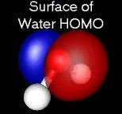
v. Select Plot>Contour. In the dialog box, browse to find your *.plt file (e.g., mo.plt). Click Import File. You will notice that a Mapping button appears, and next to this are the min and max values of your plt file. This orbital is basically the oxygen 2px orbital, and you will see that min = -max. There are two ways to plot up the results: Surface (pseudo-3D) and contour plots with adjustable cut planes. Let's do a surface plot
first.
C. Surface Plot
i. In the Contour Control dialog box, click in the first blank box below "mapping". Type 0.2 or whatever value you are interested in seeing the surface for. Now click the Colour box and select red, or whatever color you like for the positive lobe of the orbital.
ii. Now go to the next line down, click, and type -0.2 (or the negative of whatever you chose in the previous step). Click color and select blue or whatever, and click Apply (and the gOpenMol button if you have Instant Update turned off). You should see the shape of the water non-bonding MO. Rotate and admire.
iii. 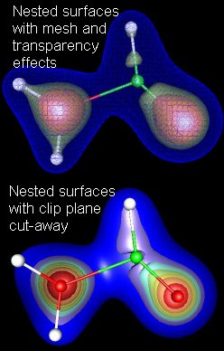Now click on the Details box on each line next to the color boxes, and you can fool around with different settings. Try setting the transparency slider to about 0.3, and you will be able to see the molecular framework through the MO surface. A different sort of transparency effect can be gotten by setting the contour type to "mesh", in which case the slider controls the mesh density. You can also fool with lighting and reflection properties (under Edit>Light properties or Edit>Material properties) Have fun playing. The figure at right shows the HOMO of water with the contours set at +/- 0.1, and the red contour made transparent so that the molecule shows through.
iv. Visualizing nested surfaces. Not uncommonly, you might want to visualize a surface or surfaces that are contained within another surface. For example, you might want to show the HOMO for a molecule, nested inside the LUMO, or you might want to see a whole series of surfaces of constant electron density (as in the examples at right). There are several options for viewing the inner surfaces.
In the upper half of the figure, I have used different combinations of the "mesh/solid" setting and the transparency slider to make the inner structure visible through the outer surfaces. This approach works fine for 2 or 3 nested surfaces, but is not workable with many surfaces. NOTE: If you want to visualize nested surfaces this way, you must define the contours in order from inner-most to outer-most. If this order is not followed, you will not be able to see the inner surfaces, even with the outer surface opacity set to zero.
The lower frame shows a new (to version 2) way to display nested structure, using Clip Planes. The usage is pretty self-explanatory. First import coordinates of a molecule, then Plot>Contour to load up a contour, as described above. Next use Plot>ClipPlane and experiment. If you look in the DEMO on Clip Planes, you will see a nice example of combining a clip plane and a cutplane (see below) to make an interesting picture.
v. What is the Glue button for? You probably noticed this button on the contour control widget. This is used only if you have multiple structures imported simultaneously. By default, all contours are attached to structure #1 (the first listed in the Interface window). If you have several molecules showing, and want to plot contours, then you have to tell gOpenMol which contour file(s) to associate with which structure. The Glue button deals with this, and is pretty self-explanatory. There is a good explanation in the manual, complete with an example using files from the demos.
D. Cutplane Plot
i. Select Plot>Contour and click "Delete all contours", This gets us back to just the framework.
ii. In the Contour control dialog, browse to find your *.plt file again (mo.plt) and click Import then Dismiss.
iii. Select Plot>Cutplane to pull up the contour plane control box. Basically, this lets you sweep cutplanes (yz, xz, and xy) through the cubical grid of data (MO #5 of water) and see contours.
iv. 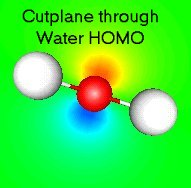For this example, check the "xy-plane" box, then type 0.05 into the box just to the right. Click Apply and you should see the contours of the orbital. You may need to rotate the molecule around to get the plane oriented correctly. The figure to right shows an x-y cutplane cutting through the middle of the oxygen atom.
v. Now click the button labeled "Y - --> +" under Animate. This will pull up the animation control. Click |< to rewind, then click |> to sweep the cutplane through the molecule. To get a good view of what is going on, you may need to rotate the molecule around. You can rewind and single step through the sequence, or step backwards, etc. You can simultaneously have more than one cut plane.
Note that in the contour plane control widget there is a button label "Peek Contour Profile". If you click this you will see a map that is supposed to identify which cutplane would have the highest information density. To get rid of the profile display, just click on the molecule display and it will revert to showing the molecule.
E. Connolly Surfaces
gOpenMol comes with a utility program called ProbeSurf that can generate a *.plt file for a Connolly surface. To use it, you do the following steps:
Import your molecule or molecules.
select File>Export>Input, and choose ProbeSurf. This will let you write the input file to the ProbeSurf program. Enter a filename (*.inp)
into the appropriate box, fool with settings if desired, then click Apply, and click Save in the second box that pops up. Dismiss both boxes.
select Run>ProbeSurf, enter your *.inp file in the input file box, enter a filename (*.plt) in the output file box, click Apply. When gOpenMol
asks if you want to read in the contour file, say yes. Now you are ready to plot it up. Set your contour value at 50, pick a color, etc. and click Apply
4A. Animating normal mode vibrations or other trajectory information.
gOpenMol can animate (and provides tools for analyzing) many types of trajectories, including MD simulations, normal coordinate vibrations and others. This section will focus on animating vibrations, but there are Demos (Help>Demos) that show other types.
gOpenMol includes a utility called XVIBS that can read Gaussian, GAMESS, etc
output files (*.log for Unix Gaussian, *.out for G98W) and convert the normal mode vectors into XMOL trajectory files. gOpenMol can
then animate the vibrations. Here is the sequence.
A. Select Run>xvibs to run the conversion utility. Browse to find the output file containing the vibrations.
NOTE: If you have an output file containing more than one set of frequencies (e.g. several molecules in the same output file or frequencies calculated at different levels of theory) you will have to manually edit the file and delete all but the set you want to convert. In XVIBS, you can either convert all the vibrations, or a particular mode by typing ALL or a mode number in the Vibration(s) box. I have no clue what the "palindrome" option is supposed to do, but as far as I can see from the xvibs source code, it does nothing. This will generate a file or set of files with the *.xmol file extension. These Xmol trajectory files contain both the equilibrium structure and the vibrational trajectory, scaled up by a factor of two from the Gaussian vibrational mode vector. The tutorial includes files for the three water normal modes (h2o00n.xmol), and also for mode 1 of a phenoxy-ammonium cation complex (phenoxam001.xmol).
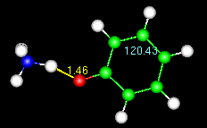
Note the numbers on the animated figure at right. One is giving a constant update on the O-H bond length. The other is for a C-C-C bond angle in the ring. These numbers are generated by the Trajectory>monitor widget, described at the end of the tutorial.
NOTE: If you have problems running XVIBS within gOpenMol, you may not have Java installed on your computer (you can download it from http://java.sun.com/). If all else fails, I have included a stand-alone version of the XVIBS program (MS Windows executable and the C source code)in the zip file for the tutorial. If you have problems, stick xvibs.exe in a directory by itself, copy your file with the vibrational coordinates (e.g. Gaussian .log or .out file) to that directory and run xvibs. So far I haven't run into a problem with this method. The program source code is pretty self-explanatory, so feel free to modify as needed.
B. To plot the vibration, you must first load the structure. Start by selecting File>reset>gOpenMol to clear out any old junk. Because the Xmol files have the both the equilibrium structure and the animation information in them, we need to load them twice. Select File>import>coords, browse to find the h2o001.xmol file, and import it. You should see the water structure.
C. To plot the vibration, select Trajectory > Main to pull up the trajectory control box. Select XMOL from the list of file types, browse to find h2o001.xmol, click Import File, then click Apply. This loads up a 20 frame trajectory for the water bend. Click the |> box to start the animation. Click the box with the square in it to stop. That's all there is to it. NOTE: If you want to plot one of the other water vibrations, you do not have to go back to step B, because the equilibrium geometry is the same for all the modes. Just load the trajectory as in step C.
Slowing down the display: On faster computers, the animation can be too fast to see. You have two options. You can either use View>Atom Type to change to a more elaborately rendered style that will slow things down, or (new to version 2.0) you can enter a time in msec into the "slow down display" box in the main trajectory control window.
NOTE:To add distance/angle labels, see section 4C below.
4B. Displaying vibrations as normal mode vectors.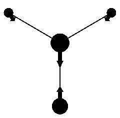
For publication, or other places where it is not feasible to show animations, gOpenMol also is able to display vibrations as normal mode displacement vectors superimposed on the equilibrium geometry, as shown in the figure. The way this is done is a bit kludgy, but it does illustrate the use of Tcl Scripts (see below) to automate/extend the capabilities of gOpenMol. We will use two scripts in this example. One, (VectorDemo.tcl) written by Leif Laaksonen, actually calculates and displays the vectors. The other (FlatBlack.tcl), simply switches to a matte black-on-white display that is suitable for publication. Both can be found in the data\autotcl\gui directory, and are loaded automatically on startup.
Here is the procedure.
- Load up the structure of the molecule you want to display (File>Import>Coords)
- Load up the trajectory for the vibration you wish to display (Trajectory>Main, import the trajectory, turn off frame number display, then Dismiss
- In the command line box (lower right corner of the Interface Window) type FlatBlack and hit return. You should now have a black and white "ball and stick" display of your molecule. If you prefer a different display mode, you can easily edit the script, which can be found in the data/autotcl subdirectory.
- To draw the vectors, type lulVectorDemo {4 0.03 black} in the command box. You should now have vectors corresponding to the 5th frame of your vibrational trajectory superimposed on the equilibrium structure (frame 1). There is more documentation of the options for this procedure in the header for the VectorDemo.tcl file. Basically, the inputs are {"how many frames ahead the vectors should point" "the thickness of the arrows" "the arrow color"}.
- NOTES:
1. You can also control the two aspect ratios for the arrows (arrowhead/shaft radius and shaft/arrowhead length). To do this, you must edit the gopenmol_guirc.tcl file (before running gOpenMol) and look for the following line (or similar): #set gomCylinderArrowControl "1.3 0.7" . First delete the # (comments out the line), then you can play with the two ratios. For the figure shown here, I used ratios "2 0.7".
2. If you use the FlatBlack.tcl script, it sets the cylinder and sphere quality to a high value. If you subsequently want to run an animation, it will be very slow, and you might want to issue the following commands: define cylinderquality 10 and define spherequality 10 to reset to the normal quality factor. You can also use File>Reset>gOpenMol to reset the display.
3. If you are running gOpenMol version 2.0 or earlier, you have to take a couple extra steps (consider upgrading!).
a. Use File>import>Tcl Script to load and run the script FlatBlack.tcl (found in the tutorial directory). Dismiss the script widget.
b. Use File>import>Tcl Script to load and run the script VectorDemo.tcl (found in the tutorial directory). Dismiss the script widget. This step doesn't appear to do anything, but it loads up the procedure "lulVectorDemo" that gOpenMol will use to calculate the vectors, making the procedure available as a command.
4C. Analyzing Trajectories.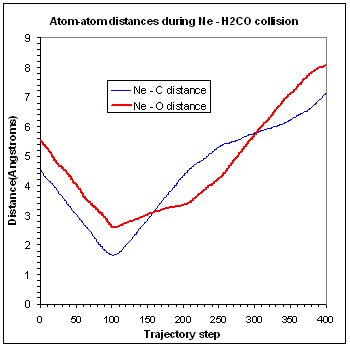
In addition to visualizing trajectories, it is also possible to analyze various features. For example, you might want to know how some interatomic distances or angles change during a trajectory (as in the figure), or look at some properties of a trajectory (e.g. average distances, power spectra, ...). All this is simply done as follows:
- Use Trajectory > Main to load the trajectory up as in 4A, above.
- Use Trajectory > Monitor to tell gOpenMol which distances, angles, torsions you want to monitor. You can type atom numbers into the boxes or use "Pick atom" mode to click and drag atoms to the boxes. Set Display to ON, and chose line colors, etc. to be able to see the parameters being monitored.
- Use Trajectory > Fill to fill an array of either distance, angle, or torsion angle v.s. trajectory step. Note that if you have several distances or angles being monitored, gOpenMol will create a separate time series for each one.
- If you want to perform some manipulations on the time series, use Trajectory > Time Series. You can calculate properties of a particular time series, or take sums and differences, ...
- If you want to plot up the time series data, use File > Export > Timeseries, give the number of the timeseries you want to export, and file name. This creates a text file of whatever property you monitored v.s. trajectory step. The figure was created by importing the text files into a spreadsheet for plotting.
- NOTE: gOpenMol calls these things timeseries, however, since some trajectory file formats do not give the real time associated with the steps, gOpenMol is really only dealing with trajectory step numbers
5. Making Movies.
There are two basic ways to make movies in gOpenMol. If you are visualizing a trajectory (e.g. an MD simulation or vibration), all the work has been done for you. You simply load up your trajectory, then select Trajectory>Make movie, give a base file name (e.g. water) select TGA file type, then click Apply. This does two things. It creates a sequence of TGA (Targa) files, one for each frame in the trajectory (water0.tga - water 19.tga), then it calls a program (CMpeg.exe) to glue them all into an MPEG file (water.mpg), that you can view with any MPEG viewer, import into a presentation graphics program, or whatever.
Limitations of the CMpeg program used to glue the frames into an MPEG movie:
- You cannot use long file names. Name your output file something short (e.g. "temp") then rename the movie when it is complete.
- File formats other than TGA are listed in the Make movie dialog. If you select one of them (e.g. BMP), you will get the BMP files
corresponding to each frame, but will not get the MPEG file). Unfortunately, the CMpeg program doesn't run under UNIX, so you will also only get the raw frame files. The animated GIF files in the tutorial were made by writing out the movie as TGA files, then using Animation Shop (JASC software) to convert to the animated GIF format.
- Because of limitations of the CMpeg converter, the maximum window size allowed is 16000 pixels. You can set the molecule widow size by dragging the corner, or using the "window" command. For example, entering window 1 resize 352 288 in the "Command" text box will resize to 352x288.
The other possibility is to create your own movie using a script, allowing you to capture just about anything that gOpenMol can do. Note that the trajectory movies are implemented in a script called make_movie.tcl, and you can cut and paste from this script to add movie making to your own scripts. Leif has provided one pre-written moving-making script, that is part of the make_movie.tcl script. This script adds a command that will take whatever you have on the display, and make a movie of it rotating about an axis of your choosing. Such a movie is useful if you want to present a complicated molecule where it is difficult to see the 3-d structure in a static display. To use this script, get the display loaded up with whatever you like. Finally, in the "Command" entry box, type lulApplyMakeMovieRotation filename y 360 20. This will rotate your display about the y axis by 360 degrees in 20 steps. It will create (and later destroy) TGA files for each step, then call CMpeg.exe to make the movie. The resulting "filename.MPG" along with all the filename.tga files for each frame, wiil be found in the temp subdirectory of your gOpenMol directory. NOTE: filename must be less than 6 characters long with no extension
6. Selecting and manipulating groups of atoms, measuring molecules, merging structures and exporting structures.
Sometimes it is useful to manipulate a structure or a subset of a structure and export the resulting structure for further calculations. Examples:
You want to build up a starting guess for a transition state optimization by distorting the structure of a stable complex.
You are trying to optimize a transition state, and end up at a 2nd order saddle point instead. You use the vibration animation feature (above) and find that one vibration is the reaction coordinate, and one is some uninteresting motion like a methyl torsion. You use the vibration animation to distort the structure along the uninteresting coordinate, and you want to write out geometries as input for additional calculations.
You want to generate a starting guess for optimizing the geometry of a complex between two molecules.
How to do it:
A. Load the example file: First select File>Reset>gOpenMol. Now select File>Import>Coords>Xmol, then open the file phenoxam001.xmol. You should be looking at the structure of a cationic complex between phenoxy radical and NH4+. If you want to play around with building up a composite complex by putting together two structures, then also import (check the "Append structure" box) the file h2o001.xmol. You should be looking at a water molecule superimposed on the phenoxy-ammonium complex.
B. Select the substructure using one of several methods:
Use Edit>Select to open the Select Atoms widget. Turn on "Pick atom(s)" in the interface window. Note that the display is frozen in Pick Atoms mode, so make sure the molecule is rotated so that you can see the atoms you want to select. Also, the pick atom feature only works on atoms that are being displayed (View>Atom type to turn on or off). Pick (i.e., click on) the set of atoms you want to select. As you move your mouse cursor over an atom, a small dot will appear. When you click, a larger dot will indicate that they are "picked". You can "unpick" atoms by clicking them again, or if you have many atoms picked, you can click on the "Unpick all" button in the Interface window. For this example, pick all the atoms in the NH4 group. Once all of them are picked, click on the background of the display, and drag the mouse cursor onto the Select Atoms widget. You should see that those atoms are now listed for selection. Click Apply in the Select Atoms widget and you should see diamond-shaped markers appear on the selected atoms (unselect to get rid of the markers). You are ready to manipulate your structure.
If you know the atom numbers, you can type them into the Select Atom widget. Use Edit>Select, then enter 13-17 (or 13,14,15,16,17 - no spaces) in the Atom: box. Click apply. This selects the ammonium cation substructure. For biomolecules, you can select a particular residue by entering the name of the residue in the appropriate box. Finally, you can designate a subset of the atoms by entering the atom type (C=carbon, etc.). You can get gOpenMol to tell you the atom numbering (and residue names) in couple ways. View>Atom labels will display labels next to the atoms. To get rid of the labels, set Display state to Off and click apply. For more complex molecules, it is better to use View>Atom tree to get information sorted by residue.
If the substructures you want to manipulate are contained in separate files (e.g. you are building a complex from two molecules) then selection is really simple. There are two methods:
1. Just import the two structures (check "append" in the Import Coordinates dialog). Now you use Edit>Select. Note that there are radio buttons
in the Select Atom widget for each of the files you loaded. To select one of them, just click on the button for that file,
and click apply.
2. You can select and manipulate substructures using the "Local" transformation mode, but as explained below, what Local transformations do depends on how you have gOpenMol configured, so you have to be a bit careful. You can switch between Global and Local using the radio buttons in the main interface window. To use local mode to manipulate structures, simply note that in the main interface window, where the files you have imported are listed,
there is a check box next to each file name. In Global mode, all transformations apply to the display, but in local mode, transformations apply only to the structures that are "checked".
C. Measuring structural parameters: There are many cases where you might want to measure distances or angles in your structure, but you almost certainly want to do this if you are manipulating
a subset of the atoms. Open the View>Measure widget, and enter the numbers of the atoms you want to keep track of. You can either type in the numbers if you know them, or use the Pick Atoms feature. For this purpose, turn on "Pick atoms", then move your mouse over the first atom you want to measure. When the small dot appears click and hold the mouse button. As soon as the small dot changes to a large dot, drag the cursor into the Atom #1 box in the Measure geometry widget and release the mouse button. That atom number should appear in the box. Repeat for all the atoms of interest. There is also a nifty way to monitor distances and angles continuously, by having them appear directly on the molecule display. This is particularly useful if you are watching a trajectory and you want some coordinates to appear on the screen. Instructions for setting this up are given below.
NOTE: In the current release of gOpenMol it is not possible to measure distances or angles between atoms that belong to structures residing in different files. The solution is to merge the structures. Just select Edit>Merge Structures to create a composite structure.
D. Manipulating the substructure with your mouse: Notice that at the right side of the Interface window, there are three sets of radio buttons. Make sure that Instant update is turned on, then turn Selection on as well. Now when you click and drag in the View window, only the
selected substructure rotates rather than the whole structure. If you switch from Rotate to Translate, then dragging the mouse moves the
substructure relative to the rest of the molecule. In order to see what you are doing, you will want to toggle Selection: on and off so that you
can see what the resulting structure looks like from different angles. Personally, I find this mode nearly useless, because it is too hard to control the
manipulation.
E. Manipulating the substructure using distances and angles: Use Edit>Rotate/Translate to open the Rotation/Translation control dialog. This gives you ability to rotate and translate with respect to the x,y,z axes, by any amount you like. Note that at the bottom of the dialog box,
there are radio buttons that allow you to apply the transformations to either the whole system or just the selected substructure. A particularly useful scheme is to use the Rotation/Translation control to manipulate the selected atoms, but use the mouse to rotate the entire structure (turn "selection" off in the Interface box). This combination allows you to precisely control the atoms you are moving, but you can rotate the molecule around so that you can see what you are doing from different angles. I also find it helpful to set the display to orthographic (in Edit>Display Properties) because I find the default perspective view confusing.
F. What is with the coordinate axes, anyway?: When you are trying to rotate and translate molecules or selected parts of molecules, it is helpful to understand how gOpenMol keeps track of coordinate axes. Fortunately, it is possible to display the coordinate system while you do the manipulations, and I STRONGLY recommend doing so. Select Plot>Axis to display the axes. You can either plot axes on all atoms (the default), a particular atom (give the atom number), or centered at a particular location in space (give a set of x,y,z coords as floating point numbers in the "segment", "residue", and "atom" boxes). The default axes (i.e., the orientation your molecule displays in when freshly
imported) are defined as follows: x - horizontal in plane of screen, y - vertical in plane of screen, z - out of plane. You can see this if you display axes after freshly importing a molecule, or selecting File>Reset>View. Here comes the tricky part. If you rotate the whole display (i.e. "selection" is turned off) then you are rotating the virtual "box" that your molecule is displayed in, and the coordinate axes rotate with the box. If, on the other hand, you have "selection" turned on, then the box and coordinate axes do not rotate. Instead, you are just rotating the selected atoms or molecules with respect to the coordinate axes. If you have the axes displaying, you can see that they do not rotate as the selected atoms move around. Keeping track of axis orientation is very important when you are modifying a structure. Just make sure you turn on the axis display before starting.
Note: the way things move when you use the Edit>Rotate/Translate control also depends on whether you have "selection" turned off or on. When "selection" is off, you are moving the whole display. In that case the motion is with respect to the original axis alignment (i.e. x = horizontal, y = vertical, z = out of plane of display). If "selection" is turned on, then the motion is with respect to the local axis alignment, i.e., the axis alignment displayed with the Plot>Axis command.
G. Writing out the coordinates of your new structure: Simply select File>Export>Coords, then pick your favorite file type, give a filename, and click Apply. For generating coordinates to paste into a Gaussian input file, I usually use the XYZ file type. Note: If you are working with multiple structures (imported from different files) and want to export a composite structure, you need to use Edit>Merge Structures before exporting. Also note that if you are working with GAMESS, MOPAC, and a few other quantum chemistry programs, gOpenMol can export directly into the right format
for input to these programs. Try File>Export>Import. For Gaussian, write an XYZ file, then edit.
7. Global v.s. Local transformations
One feature of gOpenMol is the ability to handle both global and local transformations (see radio buttons in Interface window). Note: this feature
has no effect unless you have structures loaded from more than one file (check Append when doing File>Import>Coord). To see what they do, read in two structures. If Global transformation is chosen, then when you rotate or translate with your mouse, you will see
that the two structures rotate about a common point. This mode allows you to rotate or translate the entire ensemble of molecules. If Local is chosen, then the rotation is with respect to a local coordinate origin for each structure. Also, in local mode you can translate or rotate one structure, leaving the other fixed. To do this, you first uncheck (i.e., deselect) one of the structures in the box in the upper left of the Interface window. With one structure deselected, the local transformation is applied only to the selected structure.
WARNING: Here is the tricky bit. gOpenMol can be configured to treat Local transformations in two different ways.
In the default, even though you see the structure changing as you manipulated things, gOpenMol remembers the original geometry your structures had when first imported. When you switch back to "Global" transformation, you will see that the geometry reverts back to the original arrangement. Also, when you merge structures or export coordinates of the structures after a Local manipulation, the geometry reverts to the original geometry. The reason for this is to allow you to export Connolly surfaces such that they will align correctly with the molecular framework.
If you want gOpenMol to remember the modified geometry for exporting purposes, you must modify two parameters in a script file, as described below.
8. Automating with Tcl scripts
Many of the graphics functions of gOpenMol are actually implemented as Tcl scripts. Tool Command Language (Tcl) is an open-source interpreted language with associated interpreter, primarily used to create and manipulate graphics. For the programmer, the nice feature is that the Tcl code is platform-independent (hence gOpenMol can run on Linux, Windows, ...). For the user, the neat thing is that you can write your own Tcl scripts to automate routine tasks, or create smooth-flowing presentations, etc. There is no manual per se for the Tcl part of gOpenMol, however, the Tcl commands that are useful in gOpenMol scripts are documented in the Help files (look for "Tcl command line interface"). In addition, there are numerous sources of Tcl information on the web, including open source archives, etc. Perhaps the most useful approach for the chemist who just wants to hack together a simple script, is to modify an existing script, and gOpenMol includes many examples. For the beginner, a good starting point is the sample.tcl file, included with the tutorial. This script is heavily commented and pretty easy to figure out. It shows how to:
import a molecular structure
set the type of view (CPK, scaled CPK, Licorice stick, ball and stick)
use loops to repeat actions
add text to the display
rotate the display
display a molecular orbital in various ways
animate a trajectory, including displaying distances and angles.
define procedures and pass parameters
To run the sample.tcl script, start gOpenMol, then select File>Import>Tcl script... Browse to the directory where you unzipped the tutorial files, then select sample.tcl. You will see that the script is loaded into an editor window, and you can run the script, edit the script, and run it again without having to reload the file. Very helpful when fine tuning a script. Note that you can also issue commands, just like in a script, using the "Command" interface box at the bottom of the main gOpenMol interface window. (If you don't see this box, resize the interface window). The Demos for gOpenMol (Help>Demo..)are also implemented as Tcl scripts, and if you look at them using a text editor you can get ideas about other things you can automate. Basically, it is possible to automate nearly every feature in gOpenMol. As discussed above, you can then record an MPEG movie of your script that can be imported into various presentation graphics programs
9. Features for Biomolecule Visualization
Biomolecules aren't my thing, so I will limit this section to describing features of gOpenMol, and leave you to figure out what they are good for. You can get some idea of what sorts of biomolecule visualization gOpenMol can do by visiting Leif's gOpenMol Picture Gallery. Also, the Quick Start page on the gOpenMol web site gives some information about biomolecule visualization.
Hydrogen Bonds. You can get gOpenMol to calculate which atoms in your structure are hydrogen-bonded two different ways. The easiest is to select Calculate>Hydrogen bonds from the menu, pick a color for bonds, use the segment, residue, and atom boxes to restrict the part of the structure gOpenMol will search, make sure "action" is set to ON, and click apply. If you load up the phenoxam001.xmol file in the tutorial, and leave the '*'s in the segment, residue, and atom boxes, gOpenMol will detect and draw the hydrogen bond between phenoxy and ammonium. One of the options is "No hydrogen atoms in structure" in case your biopolymer structure doesn't include the H atoms. You can also calculate hydrogen bonds using the commands calculate hbonds Seg Res Atm Color or calculate hbonds Seg Res Atm nohy. This is useful if you want to calculate the hydrogen bonds from within a script.
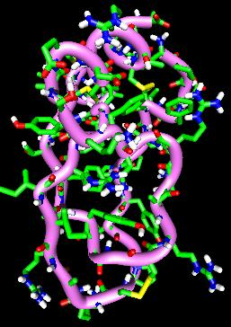Plumber plots, Ribbons, Displaying by residue, etc. gOpenMol does all these things, however, I don't know enough to give much useful instruction. Experiment with the Plot>Plumber dialog, noting that there are many ways to display secondary strucure, both automatically, and with fine manual control. You can also change display mode (stick/licorice/plumber/CPK...), color, size, etc. for particular atoms or groups of atoms. Use the View>Atom type, View>Atom mask, View>Atom colour, ... menu options. You can select groups of atoms by atom number, as above, but also can work with particular types of atoms (H,C,O,N,Ca,...), or particular residues (e.g., ASP* in the residue box will select all aspartic acid residues, a number in the residue box selects that residue), or the C-alpha trace (enter CA (not Ca) in the atom box). Check out the Click for Information button in the Plumber widget. The create all plumbers of this type button allows you to automatically create plumbers of different types (alpha helices, beta strands, loops) so that you can display them with different colors, or whatever.
It is also possible to color particular residues or atoms, and to include or omit particular atoms from the display. For example, the figure at right omits the crystal waters. To do this, I first turned on "Pick atoms", and opened the atom tree window (View>Atom tree). I then clicked on an atom of one of the water molecules and noted the residue name that appeared in the atom tree window. Finally, I used View>Atom mask to turn off display of the residue containing all the crystal waters.
LDP Plots and the Multi-Display option: For those into looking at proteins, the Linear Distance Plot is useful in picking up secondary structure. There is an example in the Demos. To generate the LDP, you select Plot>LDP to call up the Select LDP Atoms widget. You can either type in an atom type or atom numbers. Click LDP On and Apply. Your molecule display is now replaced with the LDP, which is some kind of a distance correlation plot (you can tell that proteins aren't my area of expertise). If you were running a trajectory, the LDP is constantly updated so you can see your molecule rattling around. Here is where the Multi-Display option comes in. With the LDP showing, select Edit>Display properties, click Multi. Now you can see the LDP and the molecule at the same time. One neat thing is that if you click on one of the squares in the LDP plot, a large arrow will appear in the molecule display, showing which pair of atoms that square is showing the distance for.
10. Creating VRML files (3D images and trajectories that can be manipulated over the web)
As discussed above, you can output static images (File>Hardcopy) and movies (Trajectory>MakeMovie) from gOpenmol. The limitation of these formats is that the viewing angle cannot be changed by the viewer, making it difficult to examine complicated structures. Using Virtual Reality Markup Language, viewers can rotate, pan, and zoom the display so they can explore a complex image or animation. With version 2.2, gOpenMol includes the possibility for writing plug-ins -- user-written programs that add functionality. Kevin Boyd (Univ. New Orleans) has written a VRML plug-in that allows gOpenMol to write VRML files, including both static and trajectory displays.
To view VRML files, you need a VRML viewer program or a VRML "plug-in" for your web browser. NIST has a very nice
VRML web page with links to (mostly free) VRML viewers and plug-ins for all common operating systems/browsers, and to VRML tutorials.
Creating VRML content in gOpenMol is very simple. Start by loading your structure into gOpenMol, and if it is a trajectory, also load up the trajectory. Then select Tools>DLL/SO Plugins>VRML to bring up the Export VRML animation box. The use is pretty self explanatory. Select Trajectory if you are exporting a trajectory, and Static otherwise. Select the display type, enter a file name (something.wrl), and hit Apply. In a few second, you should see your wrl file in whatever directory you selected, and if you double click it, you should see the VRML display. Details of how you manipulate the display will depend on your VRML viewer/browser plugin, but if you created an trajectory, you should see two red "control" dots. Clicking these starts and stops the trajectory.
11. Customization and other stuff I thought was useful/cool
Modifying Defaults. I like to modify some of the startup defaults to reflect the way I work. These are all set in the TCL script file gopenmol_guirc.tcl, found in the data subdirectory. NOTE: The tcl files are just text files, so once you have your defaults set the way you want them, you can copy the gopenmol_guirc.tcl file to any other computer to set the defaults there. It is a good idea to save a copy of the file before you start experimenting, and remember to save it in ASCII format.
Note: Changes made to the script file only take effect the next time you run gOpenMol. Some examples:
- Change the default coordinate import filetype from Charmm to XMOL: Open the gopenmol_guirc.tcl file in an ASCII editor, search for the string set gomCoordType "charmm" and change it to set gomCoordType "xmol". You can change the default trajectory type by finding set gomTrajType and modifying accordingly.
- Set the default display type to orthographic, rather than perspective: Insert the line:
define projection orthographic
somewhere near the top of the gopenmol_guirc.tcl file. You can also insert define projection perspective, but this is already the default.
- Changing default background color: Insert a line like define bgcolour "1. 1. 0.7", where the three numbers in quotes are the RGB values between 0 and 1.
- Changing default ball and stick: If you use the licorice display to make ball and stick models, you can change the default sphere and cylinder sizes. Search for the gomLicoSphere and gomLicoCylinder and change the defaults.
- Other options set in gopenmol_guirc.tcl are default fonts and default rotation/translation step sizes.
- Changing the behavior of Local Transformations. This is controlled by two variables: lulDoViewTransGlobalLocal and lulInputView, both set
to 0 (zero) by default. The default behavior (see above) is to revert to original geometry when exporting, merging, etc. To make gOpenMol preserve
local transformations, simply set both of these variables equal to 1 (one).
- You can control the two aspect ratios for plotting arrows (arrowhead/shaft radius and shaft/arrowhead length). Look for the following line (or similar): #set gomCylinderArrowControl "1.3 0.7" . Delete the # (comments out the line), then you can play with the two ratios. I like the ratios "2 0.7".
- Assigning commands to Function Keys: If you look in the gopenmol_guirc.tcl file, you will see a section of function key assignments, for example:
set F1 "display;# display scene"
set F2 "window 1 fullscreen;# use fullscreen mode"
set F3 "window 1 resize 500 500;# return from fullscreen mode to a 500x500 window"
As you can see, the syntax is set FunKeyNumber "command-you-want-to-assign;# explanatory-comment". By default, keys F1, F2, F3, F10, F11, and F12 are assigned. You can add assignments (look up command format in the help files) to automate tasks. For example, you can make F4 turn on licorice display mode by defining:
set F4 "atom lico * * *;# licorice display"
Note the following:
- Depending on what version of gOpenMol (Windows/Linux..) you are using, the functions keys may only work when the graphics window is the active (highlighted) window.
- If you define a key to affect the display (e.g. setting F4 to turn on licorice mode), you will have to hit F1 (display update) after hitting F4 to force gOpenMol to display the result.
- You can assign more than one command to a key, simply separating them with semicolons:
set F4 "atom lico * * *; display;# licorice display"
adds the display command after setting licorice mode, avoiding the need to hit F1
- Some commands have embedded quotation marks, such as the command mentioned above for controlling arrow aspect ratios: set gomCylinderArrowControl "1.3 0.7". Because the " characters in the command are misinterpreted by gOpenMol as it loads up the function key assignments, you have to preceed the " characters with \ character:
set F5 "set gomCylinderArrowControl \"1.3 0.7\";# set Arrow aspect ratio").
Masking atoms: Sometimes it is useful to display only those atoms that are within a certain distance of a central atom, or only certain residues in a protein. For example, you might want to display a trajectory, but show only those atoms near a particular atom where the action is. For this purpose, use the View>Atom mask control, as follows:
Load up your system and set whatever other display options you want. Select View>Atom mask
Type * * * in upper box, Set Display state to OFF and click Apply. Now NO atoms are showning
Click Use Around to ON, type * * atnum in the lower box, where atnum is the atom you want to have at the center of the viewing volume. Set a desired distance (in angstroms), Click Display State ON in upper part of box and click apply. At this point, you should see only atoms within the volume defined around your central atom, but you won't see the central atom.
Now you need to turn on display of the central atom. The quickest way to do this is just to type atom displ * * atnum in the command line box
Now you can run a trajectory or whatever, and only those atoms that are included in your display mask will show.
Shortcuts:
You can temporarily toggle between Rotate and Translate by holding the shift key down before you click and drag the mouse.
You can toggle on "pick atom" mode by holding down the Control key before clicking on an atom. If you release Control before the mouse, gOpenMol will stay in Pick mode
You can interchange the x and z rotation axes by holding down the Alt key before clicking and dragging in the x direction (but for precision control, use Edit>Rotate/Translate). This is the same as clicking and dragging the middle button on a three button mouse.
How to get distances or angles to appear on the molecule display: This is done using the Trajectory>Monitor>Distance/Angle/Torsion widget.
To demonstrate, load up some structure (try the phenoxy-ammonium structure included with the tutorial "phenoxam001.xmol"). Pick and drag the atoms you want to measure into the appropriate boxes in the Monitor widget, select a line color and a line type, set Display state to ON, and click Apply. You should now see whatever coordinate you wanted superimposed on the molecule. You can add several distances or angles by repeating. As you distort the system (either manually, or when running a trajectory) the geometric parameters will continuously update. The phenoxam001.xmol example file is an XMOL vibrational trajectory, so you can open the Trajectory>Main dialog, load the trajectory, and run it.
Drawing things on the molecule: gOpenMol has a complete command line interface (the menu operations are implemented by generating command lines that run TCL/Tk scripts). If
you look at the bottom of the Interface window, you will see a "Command:" box, and you can type your own commands there. (If you don't see the "Command:" box, resize the interface window).
Here is an example. Suppose you want to draw a vector (arrow)
showing the direction of the dipole moment for your molecule. You just have to look at the output file from your ab initio calculation and find the dipole moment coordinates. Then you use
the "plot arrow" command line. The format is plot arrow Xc1 Yc1 Zc1 Xc2 Yc2 Zc2 Radius Colour append, where the options are pretty obvious. For my water example calculation, the
dipole moment is: X= 0.000 Y= 0.000 Z= -2.243. To plot an arrow showing the dipole moment, you simply type plot arrow 0 0 0 0 0 -2.243 0.1 yellow append, and you should
see something like the example figure, given earlier. See the manual and demos for other things to draw.
Adding text to the display: You can use the command line interface to add text to the molecule. There are two varieties. "plot text" puts static text at a specified position on the
display (format: plot text color X Y "text string in quotes") The other text type is text3, which is attached to a particular point in 3D space and moves with the point as you move the display around.
(format: plot text3 color X Y Z "text string in quotes") You can also change text font and size. See the gopenmol_guirc.tcl file for clues about the format.
Instructions for merging to coordinate files into one XYZ file. The simplest coordinate file format that gOpenMol reads is XYZ, so if you need to manually create an input file, this is the format you want. Manual file creation can be useful, for example, if you want to combine atoms from several different ab initio structures to build a composite. The first line is a comment, starting with an asterisk (*), the second line is the number of atoms. The rest of the file is simply a list of atom coordinates, one atom per line. Here is an example file for water:
* xyz file for water
3
H 0.000000 0.746706 -0.479750
O 0.000000 0.000000 0.119938
H 0.000000 -0.746706 -0.479750
Two cautions. gOpenMol uses a list of atom types contained in the file atom_conversion.data to decide how to display different atoms. By-in-large the types follow the usual chemical nomenclature, but they are case sensitive (e.g. calcium = Ca, not CA or ca). Also, make sure there is a carriage return at the end of the file. You may ask: How do I get files suitable for editing into XYZ format? That will depend on the type of files you are starting with. For small systems it is easy enough to just manually edit whatever ASCII output you have from your ab initio program. For large systems, the best approach is to read each file into gOpenMol, then use File>Export>Coordinates to export XYZ files, which can then be trivially
cut and pasted together. It's a kludge, but quick.
Other Stuff As you can see by looking through the gOpenMol menu structure, and viewing the Demos (under the Help menu), this
tutorial barely scratches the surface of what can be done. gOpenMol now comes with a manual in PDF format, and it is worthwhile looking through it to
see some of the other options. If you work out how to do some other operation, feel free to email a tutorial section describing it (in the same style as above please)
to Scott Anderson anderson at chem.utah.edu (No link to discourage spam - use @ for at) and I will be happy to add it to the tutorial. Have fun.